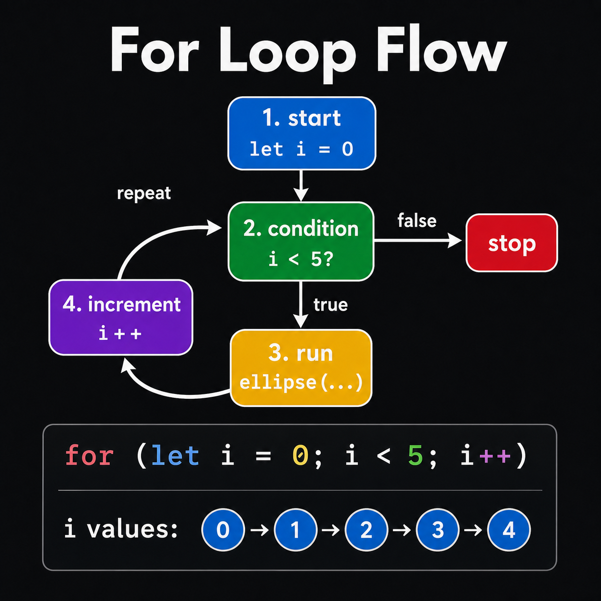
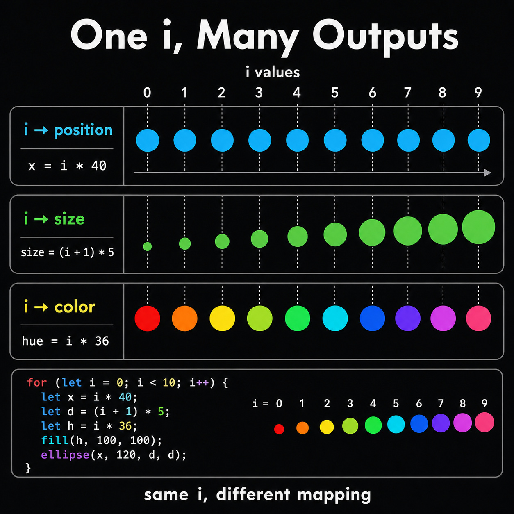
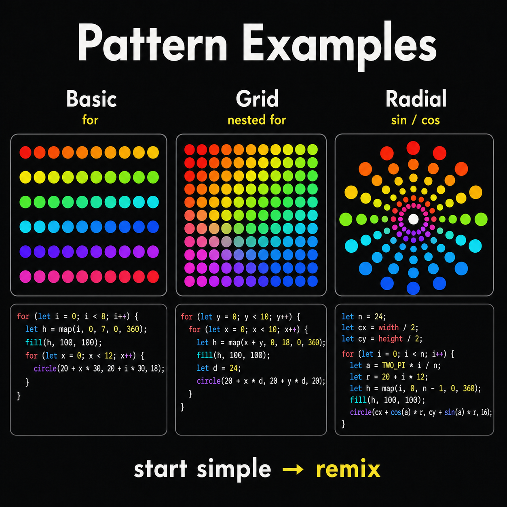

3주차 2교시 — for 반복문과 패턴
강의 아웃라인: week-03-outline 이전 교시: week-03-period1-student (색상 체계: RGB, HSB, 투명도) 다음 교시: week-03-period3-student (학생 주도 실습: 기하학적 패턴 아트)
| 항목 | 내용 |
|---|---|
| 대상 | P5.js 입문자 (테크아트 전공) |
| 소요 시간 | 45분 |
| 사전 준비 | 1교시 색상 체계 (RGB / HSB / alpha) |
-
for반복문의 구조를 이해하고 반복 변수i를 활용할 수 있습니다 - 반복문으로 도형을 패턴으로 배열할 수 있습니다
- 반복문과 색상(RGB/HSB)을 결합해 그라데이션·무지개 패턴을 만들 수 있습니다
1교시 복습
1교시에서 색상을 자유롭게 다루는 법을 배웠습니다. 두 가지를 짚고 갑니다.
fill(255, 0, 0, 128)에서 마지막 숫자128은 alpha(투명도)입니다. 0이면 투명, 255면 불투명, 128은 반투명.- HSB에서
fill(0, 100, 100)의 H=0은 빨강입니다. 색상환에서 0도=빨강, 120도=초록, 240도=파랑.
색이 아무리 예뻐도 도형을 하나하나 손으로 그려야 한다면 작품을 만들기 어렵습니다. 2교시에서는 같은 코드를 수백 번 반복하는 법을 배워서, 도형을 여러 개 배치합니다.
심화 개념 1 — 왜 반복문이 필요한가?
원 10개를 가로로 한 줄 나열한다고 합시다.
방법 A: 하나씩 직접 쓰기
function setup() {
createCanvas(400, 400);
background(240);
noStroke();
fill(100, 150, 255);
ellipse(20, 200, 30, 30);
ellipse(60, 200, 30, 30);
ellipse(100, 200, 30, 30);
ellipse(140, 200, 30, 30);
ellipse(180, 200, 30, 30);
ellipse(220, 200, 30, 30);
ellipse(260, 200, 30, 30);
ellipse(300, 200, 30, 30);
ellipse(340, 200, 30, 30);
ellipse(380, 200, 30, 30);
}10줄입니다. 100개를 그리려면 100줄, 1000개면 현실적으로 어렵습니다.
방법 B: for 반복문 사용
function setup() {
createCanvas(400, 400);
background(240);
noStroke();
fill(100, 150, 255);
for (let i = 0; i < 10; i++) {
ellipse(i * 40 + 20, 200, 30, 30);
}
}3줄입니다. 결과는 똑같습니다. 100개를 그리려면
10을 100으로 바꾸면 끝입니다. 프로그래밍의
핵심은 반복되는 패턴을 찾아서 자동화하는 것입니다.
위에서 반복된 건 ellipse(?, 200, 30, 30) — x좌표만 40씩
증가하는 패턴입니다.
반복문의 핵심 장점: 수정이 쉬워진다
코드가 짧아지는 것만이 장점이 아닙니다. 수정이 한 곳에서 해결된다는 점이 핵심 장점입니다.
| 방식 | ‘원 크기를 30→50’ 수정할 곳 |
|---|---|
| 방법 A (복사-붙여넣기) | 10줄 각각 수정 — 하나라도 빠뜨리면 버그 |
| 방법 B (for문) | 1곳만 수정 — 30을
50으로 |
i < 10을 i < 100으로 숫자 하나만
바꾸면 원이 100개가 됩니다. 이것이 반복문의 힘입니다.
심화 개념 2 — for 반복문 기본 문법
구조 분해
for (let i = 0; i < 10; i++)
───────── ────── ───
① ② ③| 부분 | 코드 | 의미 | 비유 |
|---|---|---|---|
| ① 초기화 | let i = 0 |
시작값 설정 | “0번부터 시작!” |
| ② 조건 | i < 10 |
언제까지 반복? | “10번 미만까지!” |
| ③ 증가 | i++ |
매 반복 후 +1 | “한 번 끝나면 다음!” |
i++는 i = i + 1의 줄임말입니다. 매 반복이
끝날 때마다 i가 1씩 증가합니다.
실행 흐름 추적
function setup() {
createCanvas(400, 400);
for (let i = 0; i < 5; i++) {
console.log("i의 값:", i);
}
}콘솔 출력:
i의 값: 0
i의 값: 1
i의 값: 2
i의 값: 3
i의 값: 4i=0 → 조건 확인(0 < 5? 네) → 실행 → i++ → i=1 → … → i=5 → 조건 확인(5 < 5? 아니오) → 종료.
i는 0부터 시작해서 4까지입니다. 5가 아닙니다.
i < 5니까 5가 되는 순간 멈춥니다.

2주차 변수와의 연결
2주차에서 let faceX = mouseX;로 변수를 만들었습니다.
for문의 i도 let으로 만든
변수입니다.
| 2주차 변수 | for문의 i | |
|---|---|---|
| 선언 | let faceX = mouseX; |
let i = 0; |
| 값 변화 | 직접 대입 | 매 반복마다 자동 +1 |
| 용도 | 좌표 저장 | 반복 횟수 세기 + 활용 |
for (let i = 0; i < 3; i++)이면 i는 몇 번 반복하고,
마지막 i 값은 뭘까요?
답: 3번 반복 (i=0, 1, 2), 마지막 i 값은 2.
증가값 바꾸기:
i++ 말고 다른 것도 가능
i++는 1씩 증가하는 것인데, 2씩·3씩도 가능합니다.
function setup() {
createCanvas(400, 400);
// 2씩 증가
for (let i = 0; i < 10; i += 2) {
console.log("i의 값:", i);
}
}콘솔 출력:
i의 값: 0
i의 값: 2
i의 값: 4
i의 값: 6
i의 값: 8i += 2는 i = i + 2의 줄임말입니다. 0, 2, 4,
6, 8 — 짝수만 나옵니다. 도형 간격이나 줄무늬에 활용할 수 있습니다.
흔한 실수 3가지
실습 중 오류가 나면 아래 세 가지를 먼저 확인하세요.
실수 1: 무한 루프 — i++ 대신
i--
// 이렇게 하면 브라우저가 멈춤!
for (let i = 0; i < 10; i--) {
console.log(i); // 0, -1, -2, -3... 끝없이 감소
}i가 점점 작아지니까 i < 10은 영원히 참입니다.
브라우저가 멈추면 탭을 닫고 다시 열면 됩니다.
실수 2: 중괄호 {} 빼먹기
// 중괄호를 빼먹으면 첫 줄만 반복됨
for (let i = 0; i < 10; i++)
ellipse(i * 40, 100, 30, 30); // 이것만 반복
ellipse(i * 40, 200, 30, 30); // 이건 반복 안 됨! (에러)중괄호 {}가 없으면 바로 다음 한 줄만
반복됩니다. 두 줄 이상 반복하려면 반드시 중괄호로 감싸세요.
실수 3: i를 for문 밖에서 쓰려고 함
for (let i = 0; i < 5; i++) {
console.log(i); // for문 안에서는 사용 가능
}
console.log(i); // 에러! i is not definedlet으로 for문 안에서 만든 변수 i는
중괄호 안에서만 존재합니다. 밖에서는 사라집니다. 지금은
’for문 안의 i는 밖에서 쓸 수 없다’만 기억하세요.
심화 개념 3 — 반복문으로 도형 패턴 만들기
한 줄 원 나열 — 단계별로
Step 1: 원 하나 그리기
function setup() {
createCanvas(400, 400);
background(240);
noStroke();
fill(100, 150, 255);
ellipse(20, 200, 30, 30); // 원 하나
}Step 2: for문으로 감싸기 (아직 잘못된 상태)
function setup() {
createCanvas(400, 400);
background(240);
noStroke();
fill(100, 150, 255);
for (let i = 0; i < 10; i++) {
ellipse(20, 200, 30, 30); // 10번 반복하지만 같은 위치!
}
}10번 그렸는데 전부 같은 자리라 원 1개로 보입니다. i를 아직 안 쓰고 있기 때문입니다.
Step 3: i를 좌표에 연결
function setup() {
createCanvas(400, 400);
background(240);
noStroke();
fill(100, 150, 255);
for (let i = 0; i < 10; i++) {
ellipse(i * 40 + 20, 200, 30, 30); // i가 x좌표를 결정
}
}i * 40이 핵심입니다. i=0이면 x=20, i=1이면 x=60, i=2이면
x=100… 40픽셀 간격으로 원이 나열됩니다.
반복문을 쓸 때 가장 중요한 질문은 “i를 어디에 연결할 것인가?”입니다. 좌표, 크기, 색상 — 무엇이든 될 수 있습니다.
간격 조절
곱하는 숫자를 바꾸면 간격이 달라집니다.
| 코드 | 간격 | 결과 |
|---|---|---|
i * 40 + 20 |
40px | 보통 간격 — 원끼리 딱 붙지 않음 |
i * 20 + 10 |
20px | 빽빽하게 — 원(30px)보다 좁아서 겹침 |
i * 60 + 30 |
60px | 넓게 — 원 사이에 빈 공간 |
원 크기가 30px인데 간격이 20px이면 겹치고, 60px이면 빈 공간이
생깁니다. 간격과 도형 크기의 관계를 생각해야 합니다.
i < 10을 i < 20으로 바꾸면 원이
캔버스(400px) 밖으로 나갈 수 있습니다.
크기 변화
i를 크기에도 쓸 수 있습니다.
function setup() {
createCanvas(400, 400);
background(240);
noStroke();
fill(100, 150, 255);
for (let i = 0; i < 10; i++) {
ellipse(i * 40 + 20, 200, (i + 1) * 5, (i + 1) * 5); // 점점 커지는 원
}
}i=0일 때 크기 5, i=9일 때 크기 50. i + 1을 쓰는 이유는,
i * 5로 하면 i=0일 때 크기가 0이라 안 보이기
때문입니다.
세로 줄
x 대신 y좌표에 i를 쓰면 세로 줄이 됩니다.
function setup() {
createCanvas(400, 400);
background(240);
noStroke();
fill(100, 150, 255);
for (let i = 0; i < 10; i++) {
ellipse(200, i * 40 + 20, 30, 30); // y좌표에 i 적용
}
}x좌표와 y좌표 둘 다 i를 쓰면 어떻게 될까요?
답:
ellipse(i * 40 + 20, i * 40 + 20, 30, 30) →
대각선으로 나열됩니다.
심화 개념 4 — 반복문 + 색상 결합
i를 좌표에도, 색상에도 동시에 쓸 수
있습니다.
map() 함수 — 먼저 배우고
가기
i는 0~9 범위인데 색상은 0~255 범위입니다. fill(i)로 하면
0~9라서 거의 검정만 나옵니다. i의 범위를 색상 범위로
변환해야 합니다.
// map(값, 현재최소, 현재최대, 목표최소, 목표최대)
map(i, 0, 9, 0, 255);
// i=0 → 0
// i=4 → 약 113 (중간)
// i=9 → 255 (최대)map()은 비례 계산을 해주는 함수입니다.
‘0~9 범위의 숫자를 0~255 범위로 바꿔줘’ — 이 한 줄이면 됩니다.
function setup() {
createCanvas(400, 400);
background(240);
noStroke();
for (let i = 0; i < 10; i++) {
let gray = map(i, 0, 9, 0, 255);
fill(gray);
ellipse(i * 40 + 20, 200, 30, 30);
}
}첫 원은 검정(0), 마지막 원은 흰색(255). 깔끔한 흑백 그라데이션입니다.
RGB 그라데이션 — 단계별로
Step 1: 전부 같은 색
for (let i = 0; i < 10; i++) {
fill(100, 0, 0); // 모든 원이 같은 어두운 빨강
ellipse(i * 40 + 20, 200, 30, 30);
}Step 2: i를 빨강 채널에 연결
for (let i = 0; i < 10; i++) {
fill(map(i, 0, 9, 0, 255), 0, 0); // i가 커질수록 빨강이 진해짐
ellipse(i * 40 + 20, 200, 30, 30);
}i=0이면 fill(0, 0, 0) 검정, i=9이면
fill(255, 0, 0) 진한 빨강. 점점 빨개지는 원 10개입니다.
HSB 무지개
HSB의 H(색상)는 0~360 색상환입니다. for문과 결합하면 무지개가 한 줄로 만들어집니다.
function setup() {
createCanvas(400, 400);
colorMode(HSB, 360, 100, 100, 255);
background(0, 0, 100);
noStroke();
for (let i = 0; i < 10; i++) {
fill(map(i, 0, 9, 0, 360), 100, 100); // H를 0~360으로 변화 → 무지개!
ellipse(i * 40 + 20, 200, 30, 30);
}
}H 값이 0에서 360까지 변하면 색상환을 한 바퀴 돕니다.
빨-주-노-초-파-보! RGB로 하려면 10개 색을 하나하나 지정해야 하는데,
HSB는 map() 한 번이면 됩니다. fill()의 첫 번째
인자가 이제 H(색상환 각도)입니다.
alpha 그라데이션
function setup() {
createCanvas(400, 400);
background(240);
noStroke();
for (let i = 0; i < 10; i++) {
fill(255, 0, 0, map(i, 0, 9, 0, 255)); // alpha가 점점 커짐
ellipse(i * 40 + 20, 200, 30, 30);
}
}첫 원은 alpha=0이라 완전 투명 — 안 보입니다. 마지막 원은 alpha=255로 진한 빨강입니다.
i를 여러 곳에 동시에 쓰기
좌표, 색상, 크기, 투명도 — i를 여러 곳에
동시에 쓸 수 있습니다.
function setup() {
createCanvas(400, 400);
colorMode(HSB, 360, 100, 100, 255);
background(0, 0, 15);
noStroke();
for (let i = 0; i < 10; i++) {
fill(map(i, 0, 9, 0, 360), 80, 100); // 색상: 무지개
ellipse(i * 40 + 20, 200, (i + 1) * 5, (i + 1) * 5); // 크기: 점점 커짐
}
}색도 바뀌고 크기도 바뀝니다. 반복 변수 i를
좌표·색상·크기·투명도 어디에든 쓸 수 있다는 것이
for문의 핵심 강점입니다.

실전 사례

사례 1: 그라데이션 줄무늬
Step 1: 같은 색 줄무늬
function setup() {
createCanvas(400, 400);
noStroke();
for (let i = 0; i < 20; i++) {
fill(200, 100, 100);
rect(i * 20, 0, 20, 400); // 20px 너비 막대 20개
}
}전부 같은 색이라 하나의 큰 사각형처럼 보입니다.
Step 2: HSB로 색상 변화 추가
function setup() {
createCanvas(400, 400);
colorMode(HSB, 360, 100, 100, 255);
noStroke();
for (let i = 0; i < 20; i++) {
fill(map(i, 0, 19, 0, 360), 80, 100); // H를 0~360으로 변화
rect(i * 20, 0, 20, 400);
}
}무지개 줄무늬입니다. rect() + for + HSB +
map() — 오늘 배운 것들의 조합입니다.
사례 2: 격자 패턴 (중첩 for문)
for문 안에 for문을 넣으면 2차원 격자를 만들 수 있습니다.
function setup() {
createCanvas(400, 400);
colorMode(HSB, 360, 100, 100, 255);
background(0, 0, 100);
noStroke();
for (let y = 0; y < 10; y++) { // 바깥: 줄 반복 (세로)
for (let x = 0; x < 10; x++) { // 안쪽: 각 줄 안에서 칸 반복 (가로)
fill((x + y) * 18, 80, 100); // x+y로 대각선 그라데이션
rect(x * 40, y * 40, 35, 35);
}
}
}바깥 for문이 y=0일 때 안쪽 for문이 x=0~9를 전부 실행해 첫
번째 줄을 완성하고, 바깥이 y=1로 넘어가면 안쪽이 다시 x=0~9 →
두 번째 줄. 10줄 × 10칸 = 100개. (x + y)를
색상에 쓰면 대각선 방향으로 색이 변합니다.
사례 3: 원형 패턴 (5주차 예고)
원형으로 배치하려면 sin()과 cos()가
필요합니다. 5주차에서 배울 내용인데, 미리 결과만 봅니다.
function setup() {
createCanvas(400, 400);
colorMode(HSB, 360, 100, 100, 255);
background(0, 0, 15);
noStroke();
for (let i = 0; i < 12; i++) {
let angle = i * 30; // 360 / 12 = 30도 간격
let x = 200 + cos(radians(angle)) * 120;
let y = 200 + sin(radians(angle)) * 120;
fill(i * 30, 80, 100);
ellipse(x, y, 40, 40);
}
}시계처럼 12개 원이 둥글게 배치되고 각각 다른 색입니다. 지금은 ‘이런 것도 가능하구나’ 정도만 기억하세요.
3교시 실습 안내
실습 과제: 기하학적 패턴 아트
3교시에서 반복문과 색상을 결합한 기하학적 패턴 아트를 만듭니다.
필수 요구사항
| # | 요구사항 | 관련 개념 |
|---|---|---|
| 1 | for 반복문 1개 이상 사용 |
2교시: for문 |
| 2 | RGB 또는 HSB 색상 활용 (흑백 금지) | 1교시: 색상 체계 |
| 3 | 반복 변수 i를 좌표 또는 색상에
활용 |
2교시: 반복+색상 결합 |
| 4 | 도형 10개 이상 반복 생성 | 2교시: 반복 패턴 |
방금 본 코드들이 이미 이 조건을 충족합니다. 무엇을 만들지 막막하면 OpenProcessing에서 “geometric pattern”을 검색해 레퍼런스를 살펴보세요. 똑같이 따라할 필요 없이 아이디어만 참고하면 됩니다.
실습과제 1 안내
오늘 3교시에서 시작한 패턴 아트가 실습과제 1이 됩니다.
| 항목 | 내용 |
|---|---|
| 과제명 | 기하학적 패턴 아트 |
| 제출 기한 | 4주차 수업 전까지 |
| 제출 방식 | P5.js Web Editor 링크 공유 |
| 평가 | 제출 완료 시 만점 |
완성도는 평가하지 않습니다. 직접 시도하고 제출하는 과정이 중요합니다.
시작 힌트
어디서부터 시작할지 막막하면 이 코드부터 시작하세요.
function setup() {
createCanvas(400, 400);
colorMode(HSB, 360, 100, 100, 255);
background(0, 0, 100);
noStroke();
for (let i = 0; i < 10; i++) {
fill(i * 36, 100, 100);
ellipse(i * 40 + 20, 200, 30, 30);
}
}이 무지개 원 한 줄에서 출발해, 크기를 바꾸거나 줄을 추가하거나 사각형으로 바꾸거나 배경색을 바꾸며 자유롭게 실험해보세요.